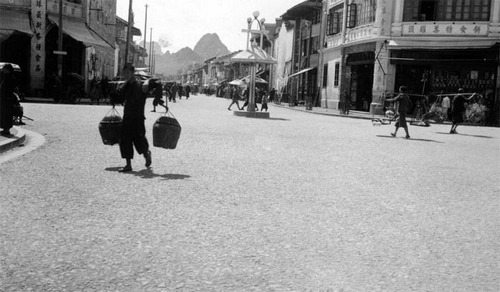

◆ 道光年间，桂林有三合班、三庆班，组织者不详，这是桂林最早的草台班。
◆ 瑞华班-1860年（清咸丰十年）成立于桂林，着名演员有：生角刘玉彩；旦角大喜美、小喜美、仁苟等；
◆ 庆芳班-1862年（清同治元年）成立于桂林。
◆ 光绪二十八年，桂剧艺人林秀甫、何秀元效仿上海戏园在桂林创建了第一个戏园- "景福园".从此。桂剧开始有了固定性场所的商业演出；
◆ 民国元年（1912年）林秀甫效仿上海"髦儿"戏成立了桂剧第一个女子科班"福珍园",从此，桂剧便出现了女性演员。
◆ 1938年4月欧阳予倩应马君武之邀到桂林试行桂剧改革、从事抗日剧运；导演了新桂剧《梁红玉》和话剧《曙光》等剧。同年8月下旬离桂赴港；
◆ 1939年9月下旬，欧阳予倩再度受马君武邀请，举家迁至桂林，全力从事桂剧改革和抗战戏剧运动；同年11月，担任广西戏剧改进会会长并成立桂剧实验剧团任团长，建立导演制、吸收新唱腔、编演新剧目、采用布景美化舞台，使桂剧有了新的起色，并为桂剧创作、改编和整理了一大批新剧目。
◆ 1940年欧阳予倩建立"广西省立艺术馆",任馆长，使广西有了第一座现代的剧场；创办"广西省戏剧改进会附属戏剧学校",培养桂剧新人；
◆ 1944年2月25日至5月19日，欧阳予倩与田汉、瞿秋白等人发起并主持了轰动全国剧坛的"西南第一届戏剧展览会",由桂剧实验剧团、启明科班、桂剧实验学校等三个单位参加演出《木兰从军》、《桃花扇》、《人面桃花》、《江汉渔歌》、《牛皮山》、《女斩子》、《南貂蝉》、《李大打更》、《秦王吊孝》等，效果极佳，广获好评，桂剧从此进入中国十大戏曲剧种行列；
◆ 自清末以来，桂剧得到快速发展，出现了林秀甫、蒋晴川、刘吉甫、福荣、福喜、宝龙、宝福、宝杰、六龙车、碧玉箫、"前四大名旦"（凤凰鸣、如意珠、桂枝香、小桃红）、刘仪高、李仪芳、何健章、何健浓、白凤奎、周兰魁、颗颗珠、定风珠、露凝香、杜木生、唐仙蝶、蒋金凯、刘万春、王盈秋、蒋金亮、玉芙蓉、后四大名旦"（ 谢玉君、方昭媛、尹羲、李慧中）等一批优秀桂剧表演艺术家。
◆ 1952年，桂林市桂剧改进一团尹羲主演的《拾玉镯》和谢玉君主演的《世龙抢伞》进京演出，得到北京文化界特别是欧阳予倩的好评。尹羲得到了毛泽东、周恩来等中央众多领导人的接见；
◆ 1953年，由桂剧改进一团在和平戏院开办桂剧"桂"字科班；
◆ 1955年，由桂剧二团在太平戏院开办桂剧"文"字科班；
◆ 1956年，由桂剧三团在人民戏院开办桂剧"艺"字科班；
◆ 1960年，筱兰魁主演的《唐知县审诰命》得到了中南局书记陶铸的嘉奖；
◆ 1974年9月，现代桂剧《滩险灯红》应邀晋京参加全国现代戏会演，主演罗桂霞应周恩来总理邀请出席中华人民共和国建国25周年国宴；
解放后，桂剧进入了新的发展时期，涌现出了尹羲、秦彩霞、筱兰魁、罗桂霞、苏飞麟、刘民凤、陈婉仙、章凤仙、苏芝仙、林瑞仙、王琼仙、梅兰香、龙民介、唐明刚、蒋明侠、阮冲、曾素华、黎久福、翁桂斌、阳桂峰、阳桂秋、秦桂娟、周桂童、蒋燕麟、马艺松、欧阳艺莲、蒋文萱等一批杰出的桂剧表演艺术家。
◆ 1989年10月，桂剧《失子成疯》荣获广西首届戏曲青年演员大奖赛表演一等奖；
◆ 1990年，桂剧《失子成疯》获第二届中国戏剧节优秀演出奖；
◆ 1992年1月，桂剧《瑶妃传奇》荣获广西第三届剧展最高奖--桂花金奖，并获广西文艺创作铜鼓奖；
◆ 1992年6月，桂剧《瑶妃传奇》应国家文化部邀请，晋京并进中南海汇报演出，受到党和国家领导人、全国着名文艺界专家和首都观众的高度赞誉和一致好评；
◆ 1993年，桂剧《瑶妃传奇》荣获第三届文化部文华新剧目奖和文华表演奖；
◆ 1996年5月，桂剧《风采壮妹》荣获广西第四届剧展最高奖--桂花金奖，并获广西文艺创作铜鼓奖；
◆ 1997年2月，桂剧《风采壮妹》应国家文化部邀请晋京汇报演出并荣获中宣部五个一工程奖；
◆ 1997年9月，桂剧《天女散花》、《打棍出箱》荣获广西第二届戏曲青年演员大奖赛表演一等奖；
◆ 1998年、2001年，桂剧《金猴出箱》两次参加中央电视台春节联欢晚会，并获全国观众最喜爱优秀节目奖；
◆ 1999年，桂剧《砸酒坛》获全国曹禺杯小戏小品大赛专业组二等奖；
◆ 2000年，桂林市桂剧团入选中国文化部《中国着名艺术表演团体名录》；
◆ 2000年1月，桂剧《漓江燕》荣获广西第五届剧展最高奖--桂花金奖，并获广西文艺创作铜鼓奖；
◆ 2001年11月，桂剧《漓江燕》荣获第七届中国戏剧节曹禺戏剧奖剧目奖；
◆ 2002年，张树萍荣获第十九届中国戏剧梅花奖；
◆ 2003年，桂剧《砸锁》获首届中国博兴国际小戏艺术节大赛优秀剧目大奖；
\◆ 2005年1月，桂剧《大儒还乡》荣获广西第六届剧展最高奖--桂花金奖，并获广西文艺创作铜鼓奖；
◆ 2005年12月，桂剧《火烧摘星楼》荣获广西第三届戏曲青年演员大奖赛表演一等奖；
◆ 2006年12月，桂剧《大儒还乡》荣获全国地方戏优秀剧目展演评比一等奖；
◆ 2007年2月，桂剧《大儒还乡》荣获2005-2006年国家舞台艺术精品工程十大精品剧目；
◆ 2007年9月，桂剧《大儒还乡》荣获中宣部第十届"五个一"工程优秀作品奖；
◆ 2007年11月，桂剧《大儒还乡》荣获文化部第十二届文华剧目奖；
◆ 2009年9月，桂剧《灵渠长歌》荣获广西第七届剧展最高奖--桂花金奖，并获广西文艺创作铜鼓奖；
◆ 2010年11月，桂剧《董洪跌牢》荣获广西第四届戏曲青年演员大奖赛表演一等奖；
◆ 2011年9月-11月，大型新编现代桂剧《何香凝》--桂林记忆，纪念辛亥革命100周年赴广西区内南宁、柳州等14各城市巡回演出，受到广泛好评；
◆ 改革开放之后，桂剧进入新的繁荣期，涌现了张树萍、曾定国、黄革萍、李素华、陈念勇、周强、李忠、刘淑娟、伍思婷等一批优秀桂剧国家一级演员。
◆ 道光年间，桂林有三合班、三庆班，组织者不详，这是桂林最早的草台班。
◆ 瑞华班-1860年（清咸丰十年）成立于桂林，着名演员有：生角刘玉彩；旦角大喜美、小喜美、仁苟等；
◆ 庆芳班-1862年（清同治元年）成立于桂林。
◆ 光绪二十八年，桂剧艺人林秀甫、何秀元效仿上海戏园在桂林创建了第一个戏园- "景福园".从此。桂剧开始有了固定性场所的商业演出；
◆ 民国元年（1912年）林秀甫效仿上海"髦儿"戏成立了桂剧第一个女子科班"福珍园",从此，桂剧便出现了女性演员。
◆ 1938年4月欧阳予倩应马君武之邀到桂林试行桂剧改革、从事抗日剧运；导演了新桂剧《梁红玉》和话剧《曙光》等剧。同年8月下旬离桂赴港；
◆ 1939年9月下旬，欧阳予倩再度受马君武邀请，举家迁至桂林，全力从事桂剧改革和抗战戏剧运动；同年11月，担任广西戏剧改进会会长并成立桂剧实验剧团任团长，建立导演制、吸收新唱腔、编演新剧目、采用布景美化舞台，使桂剧有了新的起色，并为桂剧创作、改编和整理了一大批新剧目。
◆ 1940年欧阳予倩建立"广西省立艺术馆",任馆长，使广西有了第一座现代的剧场；创办"广西省戏剧改进会附属戏剧学校",培养桂剧新人；
◆ 1944年2月25日至5月19日，欧阳予倩与田汉、瞿秋白等人发起并主持了轰动全国剧坛的"西南第一届戏剧展览会",由桂剧实验剧团、启明科班、桂剧实验学校等三个单位参加演出《木兰从军》、《桃花扇》、《人面桃花》、《江汉渔歌》、《牛皮山》、《女斩子》、《南貂蝉》、《李大打更》、《秦王吊孝》等，效果极佳，广获好评，桂剧从此进入中国十大戏曲剧种行列；
◆ 自清末以来，桂剧得到快速发展，出现了林秀甫、蒋晴川、刘吉甫、福荣、福喜、宝龙、宝福、宝杰、六龙车、碧玉箫、"前四大名旦"（凤凰鸣、如意珠、桂枝香、小桃红）、刘仪高、李仪芳、何健章、何健浓、白凤奎、周兰魁、颗颗珠、定风珠、露凝香、杜木生、唐仙蝶、蒋金凯、刘万春、王盈秋、蒋金亮、玉芙蓉、后四大名旦"（ 谢玉君、方昭媛、尹羲、李慧中）等一批优秀桂剧表演艺术家。
◆ 1952年，桂林市桂剧改进一团尹羲主演的《拾玉镯》和谢玉君主演的《世龙抢伞》进京演出，得到北京文化界特别是欧阳予倩的好评。尹羲得到了毛泽东、周恩来等中央众多领导人的接见；
◆ 1953年，由桂剧改进一团在和平戏院开办桂剧"桂"字科班；
◆ 1955年，由桂剧二团在太平戏院开办桂剧"文"字科班；
◆ 1956年，由桂剧三团在人民戏院开办桂剧"艺"字科班；
◆ 1960年，筱兰魁主演的《唐知县审诰命》得到了中南局书记陶铸的嘉奖；
◆ 1974年9月，现代桂剧《滩险灯红》应邀晋京参加全国现代戏会演，主演罗桂霞应周恩来总理邀请出席中华人民共和国建国25周年国宴；
解放后，桂剧进入了新的发展时期，涌现出了尹羲、秦彩霞、筱兰魁、罗桂霞、苏飞麟、刘民凤、陈婉仙、章凤仙、苏芝仙、林瑞仙、王琼仙、梅兰香、龙民介、唐明刚、蒋明侠、阮冲、曾素华、黎久福、翁桂斌、阳桂峰、阳桂秋、秦桂娟、周桂童、蒋燕麟、马艺松、欧阳艺莲、蒋文萱等一批杰出的桂剧表演艺术家。
◆ 1989年10月，桂剧《失子成疯》荣获广西首届戏曲青年演员大奖赛表演一等奖；
◆ 1990年，桂剧《失子成疯》获第二届中国戏剧节优秀演出奖；
◆ 1992年1月，桂剧《瑶妃传奇》荣获广西第三届剧展最高奖--桂花金奖，并获广西文艺创作铜鼓奖；
◆ 1992年6月，桂剧《瑶妃传奇》应国家文化部邀请，晋京并进中南海汇报演出，受到党和国家领导人、全国着名文艺界专家和首都观众的高度赞誉和一致好评；
◆ 1993年，桂剧《瑶妃传奇》荣获第三届文化部文华新剧目奖和文华表演奖；
◆ 1996年5月，桂剧《风采壮妹》荣获广西第四届剧展最高奖--桂花金奖，并获广西文艺创作铜鼓奖；
◆ 1997年2月，桂剧《风采壮妹》应国家文化部邀请晋京汇报演出并荣获中宣部五个一工程奖；
◆ 1997年9月，桂剧《天女散花》、《打棍出箱》荣获广西第二届戏曲青年演员大奖赛表演一等奖；
◆ 1998年、2001年，桂剧《金猴出箱》两次参加中央电视台春节联欢晚会，并获全国观众最喜爱优秀节目奖；
◆ 1999年，桂剧《砸酒坛》获全国曹禺杯小戏小品大赛专业组二等奖；
◆ 2000年，桂林市桂剧团入选中国文化部《中国着名艺术表演团体名录》；
◆ 2000年1月，桂剧《漓江燕》荣获广西第五届剧展最高奖--桂花金奖，并获广西文艺创作铜鼓奖；
◆ 2001年11月，桂剧《漓江燕》荣获第七届中国戏剧节曹禺戏剧奖剧目奖；
◆ 2002年，张树萍荣获第十九届中国戏剧梅花奖；
◆ 2003年，桂剧《砸锁》获首届中国博兴国际小戏艺术节大赛优秀剧目大奖；
◆ 2005年1月，桂剧《大儒还乡》荣获广西第六届剧展最高奖--桂花金奖，并获广西文艺创作铜鼓奖；
◆ 2005年12月，桂剧《火烧摘星楼》荣获广西第三届戏曲青年演员大奖赛表演一等奖；
◆ 2006年12月，桂剧《大儒还乡》荣获全国地方戏优秀剧目展演评比一等奖；
◆ 2007年2月，桂剧《大儒还乡》荣获2005-2006年国家舞台艺术精品工程十大精品剧目；
◆ 2007年9月，桂剧《大儒还乡》荣获中宣部第十届"五个一"工程优秀作品奖；
◆ 2007年11月，桂剧《大儒还乡》荣获文化部第十二届文华剧目奖；
◆ 2009年9月，桂剧《灵渠长歌》荣获广西第七届剧展最高奖--桂花金奖，并获广西文艺创作铜鼓奖；
◆ 2010年11月，桂剧《董洪跌牢》荣获广西第四届戏曲青年演员大奖赛表演一等奖；
◆ 2011年9月-11月，大型新编现代桂剧《何香凝》--桂林记忆，纪念辛亥革命100周年赴广西区内南宁、柳州等14各城市巡回演出，受到广泛好评；
◆ 改革开放之后，桂剧进入新的繁荣期，涌现了张树萍、曾定国、黄革萍、李素华、陈念勇、周强、李忠、刘淑娟、伍思婷等一批优秀桂剧国家一级演员。

进入三十年代以后，伴随着资本主义工商业在广西的不断发展，桂剧日渐被资本家所利用，逐步走上了商业化的道路，原来比较好的传统剧目，被"搭桥戏"、"玩笑戏"、"赌戏"所替代，它的内容多半腐败，封建思想，奴隶道德，迷信的宣传、淫谑的表现，占据了中心。过去历史艺人用血汗孕育而成的优秀传统艺术被抛弃了，庸俗下流的表演充斥舞台。桂剧处于奄奄一息的境地。
就是在这种情况下，马君武于1937年从上海回到广西后着手进行桂剧改革。马君武（1881、7、17--1940、8、1），原名道凝，字厚山，17岁改名同。19岁又改名和，号君武，原籍湖北蒲圻，在广西恭城出生，他不仅是旧民主革命政治家，着名教育家、科学家，也是桂剧改革的有功之臣。
马君武回到桂林后，经常到戏院看桂剧演出，和桂剧艺人频繁交往，从中对桂剧进行考察，他发觉，尽管桂剧在走下坡路，有"日趋没落"之势，但它已在群众中扎下根，有很浓郁的地方色彩。他相信，只要进行卓有成效的改革，桂剧还是会振兴起来的。他对个别有身份的广西人不去扶植桂剧而去热心搞平剧（即京剧）提出批评。"广西是生我养我的地方，我热爱广西，我喜欢桂剧，过去长期在国外省外，没有机会看，现在，我要多看，为繁荣我的家乡戏尽一份薄力。"在这种思想指导下，他不顾年高体弱，奔走于广西政界和文艺界的有识之士中间，为桂剧改革进行游说，得到广西当局和社会贤达等各方面的支持。1937年秋，以改革桂剧为宗旨的广西戏剧改进会（也有人叫桂剧改进会，通称改进会），在桂林宣告成立。这个改进会，由于得到广西当局的资助，实际上是一个半官方半民间的机构。
马君武被推举为改进会会长，陈俊卿、白经天（即白鹏飞）为副会长。几十名成员当时在国内都是"有最高地位的教育家、绅士兼学者",戏剧界的名人和高级官吏。像改进会这样的组织，当时在全国可以说是独一无二的。马君武不但是桂剧改革的倡导者和组织者，也是桂剧改革的实践者。他和他领导的改进会，除搜集整理传统剧目，对表演（如主张桂剧的演出要用标准的桂林话等）、音乐改革提出切实可行的方案之外，还为桂剧改革做了大量的工作。
一、筹建第一流的桂剧班
马君武认为，要改革桂剧，必须挑选一批热衷于改革的优秀艺人，以及由这些艺人组成的桂剧演出班社。当时，桂林的桂剧班社有好几个，其中，南华戏院桂剧班的基础比较好，于是，马君武就以"南华"为班底来进行桂剧改革，同时，为了把桂林桂剧界的精英汇聚在一起，马君武亲自出马做西湖戏院老板的工作，把当时在"西湖"的名演员谢玉君、方韶媛、秦讠志精、刘万春等人请进"南华",又从柳州把着名生角王盈秋邀来桂林，使"南华"成为桂林首屈一指的演员阵容最强的桂剧班社。计有生行的王盈秋、贺炎、刘玉轩；旦行的谢玉君、李慧中、方昭媛、尹羲（观众称她们为桂剧四大名旦）；小生行的秦讠志精、刘少南、金凤仙；净行的白凤奎、肖仲达、何建章；丑行的李百岁，刘万春等。马君武根据桂剧传统剧目《抢伞》改编的《离乱姻缘》，以及欧阳予倩整理、改编、创作的《梁红玉》、《桃花扇》、《渔夫恨》、《拾玉镯》、《广西娘子军》、《搜庙反正》等戏，都是通过这个演出团体演出的，她们不愧是第一流的桂剧班社，为桂剧改革立下了汗马功劳，使改革后的桂剧面貌焕然一新。
二、聘请戏剧专家改革桂剧
马君武是个颇有自知之明的人。他知道，他和改进会的成员们，虽有改革桂剧的热情，但光凭热情要改革好桂剧是难于办到的，必须聘请戏剧专家从事具体改革工作。在广西新桂系首脑人物李宗仁、白崇禧、黄旭初的支持下，马君武于1936年春，电请戏剧大师欧阳予倩到广西指导桂剧改革，当时，欧阳予倩在上海因编导演出反抗侵略的《梁红玉》和《渔夫恨》，正受到敌寇和汉奸的威胁恐吓。他接到马君武的电报，便欣然应允，于是年4月12日启程离开上海，坐船转道香港，经梧州、南宁、柳州等地，来到桂林。
欧阳予倩的到来，受到广西政界和桂林文化界的热烈欢迎。此后不久，欧阳予倩用了一个多月时间，排出了第一出改良桂剧《梁红玉》。演出后，深受舆论界和观众的好评，但也受到一些人的非议。于是，他这次来桂，只呆了三个月便离开了。1939年，马君武和白鹏飞联名再次邀请欧阳予倩到广西改革桂剧。当欧阳予倩1939年9月28日来到桂林时，马君武已出任改为国立后的广西大学的第一任校长，他把改进会会长的职务和改革桂剧的重担全交给了欧阳予倩。此后，在长达七年的时间里，欧阳予倩对桂剧进行改革，不仅出现了一批经过改良的好剧目，也培育出一大批优秀演员，使桂剧面貌发生了很大变化。欧阳予倩改革桂剧所取得的成果，与马君武为他奠定的基础，对他的大力支持是分不开的。
三、提高艺人的文化水平和社会地位
在暗无天日的旧社会，梨园里的人十有八九是因家境贫苦而"逼上梁山"去演戏的，根本不可能读书识字。马君武对艺人这种处境甚是同情，他和改进会的董事们商量，以改进会的名义，在南华戏院开办了一个艺人文化补习班，以此来提高艺人的文化水平。通过提高艺人的文化水平来促进桂剧改革，加速桂剧事业的发展。补习班学习的科目有国文、数学、常识、公民以及戏剧理论等。文化课专门请老师来教，戏剧理论课请田汉、焦菊隐、欧阳予倩、金山等专家讲课。通过补习班，艺人在文化知识上都有长进。对艺人来说，真是天翻地覆的变化。文化水平的提高，对演好改良桂剧，确实起了很大作用。
在旧社会，演戏被视为"下九流",艺人的社会地位是最低下的，尤其是女艺人，只有艺名，连个堂堂正正的真姓名都没有，马君武和欧阳予倩为她们取了名，马君武还有意识地让她们参加抗日救亡戏剧运动，为前方将士募捐义演，慰劳伤兵，使许多艺人振奋了民族精神，在斗争中增长了才干，社会地位也随之相应提高。——内容参考《尹羲表演艺术谈-尹羲从艺六十周年纪念》